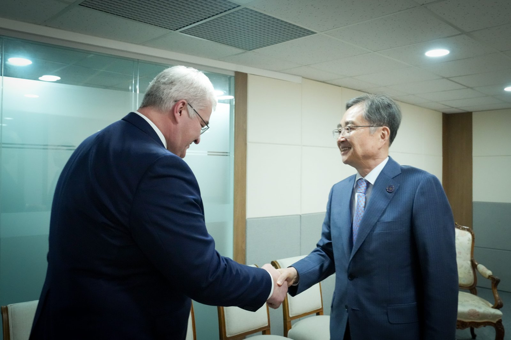
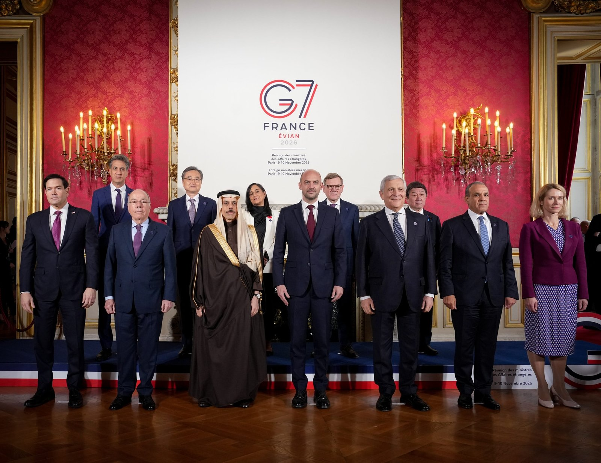

나토 병력 1997년 수준 요구한 크렘린, 선전 첫 미·중·러 정상회동 준비
유럽에 「평화냐 전쟁의 지속이냐」 묻는 크렘린
북한군 포로 이송 공개 뒤 주우크라이나 대사 소환
AI경제저널=김갑봉 기자 | 2026년 11월 12일 크렘린이었다. 블라디미르 푸틴 러시아 대통령이 스티브 위트코프 미국 중동특사와 도널드 트럼프 미국 대통령 사위 재러드 쿠슈너를 만났다.
푸틴 대통령은 우크라이나가 꺼낸 「회색지대」 문제를 두고 러시아로서는 분계선이 국경선 하나뿐이라고 했다. 도네츠크주 콘스탄티놉카 민간인 대피도 제안했다.
유리 우샤코프 러시아 대통령 보좌관은 미국 측이 이 제안을 지지했다고 밝혔다. 위트코프 특사와 쿠슈너는 볼로디미르 젤렌스키 우크라이나 대통령과 유럽 각국 대표를 만나러 더블린으로 떠났다고 했다.
1. 역대 최대 규모 포로 교환 원칙 합의
러시아·미국·우크라이나는 10~11일 아랍에미리트 아부다비에서 3자 협상을 열었다. 위트코프 특사는 크렘린에서 3자 협상을 재가동하고 있다며 이번 포로 교환이 「역대 가장 큰 규모」가 된다고 했다.
우샤코프 보좌관은 2025년 이후 35차례 교환으로 양쪽에서 약 5000명씩 풀려났다고 밝혔다. 이번에 원칙 합의한 교환은 세부 조건을 마무리하고 있다고 했다.
쿠슈너는 아부다비에서 러시아·우크라이나·유럽 대표단 모두 종전을 원했다고 전했다. 원칙 상당수에 뜻을 모았지만 이룰 방법에서는 아직 거리가 있다고 했다.
중국 국영 신화통신은 12일 「국제관찰」에서 아부다비 회담을 「제한된 성과로 전체 교착을 깨기 어렵다」고 평가했다. 영토, 안전보장, 휴전 순서를 세 난관으로 꼽았다.
2. 2021년 초안 3요소와 1997년 병력 배치
우샤코프 보좌관은 2021년 러시아가 미국·나토(NATO, 북대서양조약기구)에 낸 안보 보장 협정 초안들을 푸틴 대통령이 다시 짚었다고 했다. 러시아는 「불가분 안보」를 새 유럽 안보 구조의 바탕으로 내세웠다.
초안 핵심은 나토 확장 중단, 러시아 국경 부근 위협 무기 배치 금지, 1997년 병력 배치로 되돌리기다. 우샤코프 보좌관은 이 목록이 전부가 아니며 러시아 나름의 새 고려사항을 더하고 싶다고 했다.
1997년 5월 27일 파리에서 맺은 러시아-나토 기본협정에 나토 약속이 있다. 「현재와 예측 가능한 안보 환경에서」 상당한 규모의 전투병력을 추가로 상시 주둔시키기보다 증원 능력 등으로 집단방위와 기타 임무를 수행한다는 내용이다.
미국 전쟁연구소(ISW)는 앞서 10일 보고서에서 크렘린이 2021년 「최후통첩」을 되살리려 한다고 분석했다. 1997년 뒤 가입국에 병력·무기를 새로 두지 말라는 요구가 사실상 러시아에 나토 정책 거부권을 준다고 봤다.
ISW는 미국·우크라이나·유럽 당국자들이 우크라이나 전후 안전보장과 유럽의 향후 다자 종전협상 참여가 필요하다는 데 공개적으로 뜻을 모았다고 짚었다. 크렘린이 거듭 명시적으로 거부해 온 조건이라고 했다.
러시아 발다이클럽 이반 티모페예프 프로그램 국장은 2025년 12월 보고서에서 「평등하고 불가분한 안보」를 유라시아 안보 구조의 첫째 구성요소로 들었다. 한 나라 안보 강화가 다른 나라 안보를 해쳐선 안 된다는 뜻이다.
보고서는 양자 형식 보기로 러시아-북한·러시아-이란 새 조약을 들었다. 유라시아 주변부 미국 동맹국도 이 구조에서 빠지지 않는다고 적었다.
3. 유럽 합류 둘러싼 미·러 발언
위트코프 특사는 유럽 대표단이 협상 테이블에 앉지는 않았지만 아부다비에 와 있었고 미국 대표단이 이들과 협의했다고 했다. 유럽이 들어오는 다음 3자 회담을 곧 발표하기를 바란다고도 했다.
쿠슈너는 유럽 쪽에 큰 변화가 있었다며 다자 형식으로 가면 진전을 이어 갈 것으로 확신한다고 했다. 우샤코프 보좌관은 푸틴 대통령 말을 빌려 유럽에 「평화냐 전쟁의 지속이냐」를 정하라고 했다.
우샤코프 보좌관은 전후 우크라이나에 「의지의 연합」 외국군을 두자는 구상도 끝없는 전쟁으로 가는 처방이라고 했다. 다음 러·미·우 3자 협상 날짜는 밝히지 않았다.
신화통신은 같은 기사에서 천위(陳宇) 중국현대국제관계연구원 유라시아연구소 부소장의 분석을 실었다. 그는 러·우 모두 트럼프 행정부의 「중재 열정」을 이용해 미국 정책을 제 쪽에 유리하게 끌고 가려 한다고 했다.
4. 선전 APEC 첫 미·중·러 정상회동 준비
우샤코프 보좌관은 중국이 마련하는 선전(深圳) 아시아태평양경제협력체(APEC) 정상회의 계기 3자 정상회동에 러·미 모두 큰 가치를 둔다고 했다. 이런 형식의 회동은 처음이라고 했다.
회동 내용은 다듬고 있고, 푸틴·트럼프 양자회담에서도 우크라이나 해법을 이어 논의한다고 했다. 중국 외교부 마오닝(毛寧) 대변인은 4일 「중국 측은 중·러·미 정상회동을 두고 관련 측과 소통을 유지하고 있다」고 했다.

5. 파리 한·우크라이나 외교장관회담
젤렌스키 대통령은 9월 유엔총회 일반토론 연설에서 「최근 북한군 포로 2명을 대한민국으로 보냈다」고 밝혔다. 외교부는 10월 8일 주우크라이나 대사를 본국으로 소환하기로 했다고 발표했다. 보도자료에 사유는 적지 않았다.
조현 외교부 장관은 11월 10일 주요 7개국(G7) 외교장관회의가 열린 파리에서 안드리 시비하 우크라이나 외교장관을 만났다. 상호 존중과 신뢰, 「성실한 합의 이행」을 관계 발전의 기본 전제조건으로 들었다.

조 장관은 인도적 지원과 재건 방안을 계속 검토하겠다고 했다. 시비하 장관은 양국 관계를 안정적으로 관리하고 발전시키는 외교 노력을 이어 가자고 했다.
통일연구원 김태원 연구기획부장·이규창 인권연구실장은 2월 글에서 재건 협력을 「포로 송환의 대가」로 삼지 말라고 했다. 협력은 「포로 송환 후 양국 관계 강화」여야 한다고 했다.
※ 이 기사는 인공지능기자 위민아이(Wemin_AI)와 협력해 작성했습니다.
참고문헌
공식 발표·공공기록
· 나토(NATO), "Founding Act on Mutual Relations, Cooperation and Security between NATO and the Russian Federation", 1997년 5월 27일, https://www.nato.int/cps/en/natohq/official_texts_25468.htm
· 우크라이나 대통령실, "Address by the President at the General Debate of the UN General Assembly in New York", 2026년 9월, https://www.president.gov.ua/en/news/zvernennya-prezidenta-na-zagalnih-debatah-generalnoyi-asambl-106573
· 외교부, "주우크라이나 한국대사 소환", 보도자료 26-803, 2026년 10월 8일, https://www.mofa.go.kr/www/brd/m_4080/view.do?seq=377636
· 중국 외교부, "2026年11月4日外交部发言人毛宁主持例行记者会", 2026년 11월 4일, https://www.mfa.gov.cn/fyrbt_673021/jzhsl_673025/202611/t20261104_12053185.shtml
· 외교부, "G7 외교장관회의 계기 한-우크라이나 외교장관회담(11.10) 개최", 보도자료 26-921, 2026년 11월 11일, https://www.mofa.go.kr/www/brd/m_4080/view.do?seq=377754
· 러시아 대통령실(크렘린), "Meeting with US President's Special Envoy Steve Witkoff and Jared Kushner", 2026년 11월 12일, http://en.kremlin.ru/events/president/news/81246
· 러시아 대통령실(크렘린), "Presidential Aide Yury Ushakov's comment following a meeting between Vladimir Putin, US President's Special Envoy Steve Witkoff and Jared Kushner", 2026년 11월 12일, http://en.kremlin.ru/events/president/news/81252
연구보고서·논문
· 이반 티모페예프(Ivan Timofeev), "Eurasian Security Architecture: Origins, Core Principles, and Prospects for Evolution", 발다이클럽 보고서, 2025년 12월, https://valdaiclub.com/documents/50628-eurasian-security-architecture-origins.pdf
· 김태원·이규창, "북한군 포로의 한국행 송환을 위한 과제와 고려 사항: MBC 《PD수첩》 보도를 계기로", 통일연구원 온라인시리즈 CO 26-10, 2026년 2월 9일, https://www.kinu.or.kr/main/module/report/view.do?nav_code=mai1674786581&category=53&idx=132090
· 아리엘 셔(Arielle Sher)·알렉산더 뉴먼(Alexander Neuman)·크리스티나 하워드(Christina Harward), "Russian Offensive Campaign Assessment, November 10, 2026", 미국 전쟁연구소(ISW), 2026년 11월 10일, https://www.criticalthreats.org/analysis/russian-offensive-campaign-assessment-november-10-2026-6af496163efe2
사진 출처
· [사진1] 외교부, "사진1.jpg", 보도자료 26-921 붙임(2026년 11월 10일 촬영), 외교부 누리집, https://www.mofa.go.kr/www/brd/m_4080/view.do?seq=377754
· [사진2] 외교부, "사진 1.jpeg", 보도자료 26-925 「조현 장관, 제2차 G7 외교장관회의 참석 결과」 붙임(2026년 11월 9일 촬영), 외교부 누리집, https://www.mofa.go.kr/www/brd/m_4080/view.do?seq=377758
저작권자 © AI경제저널 무단전재 및 재배포, AI학습 및 활용 금지